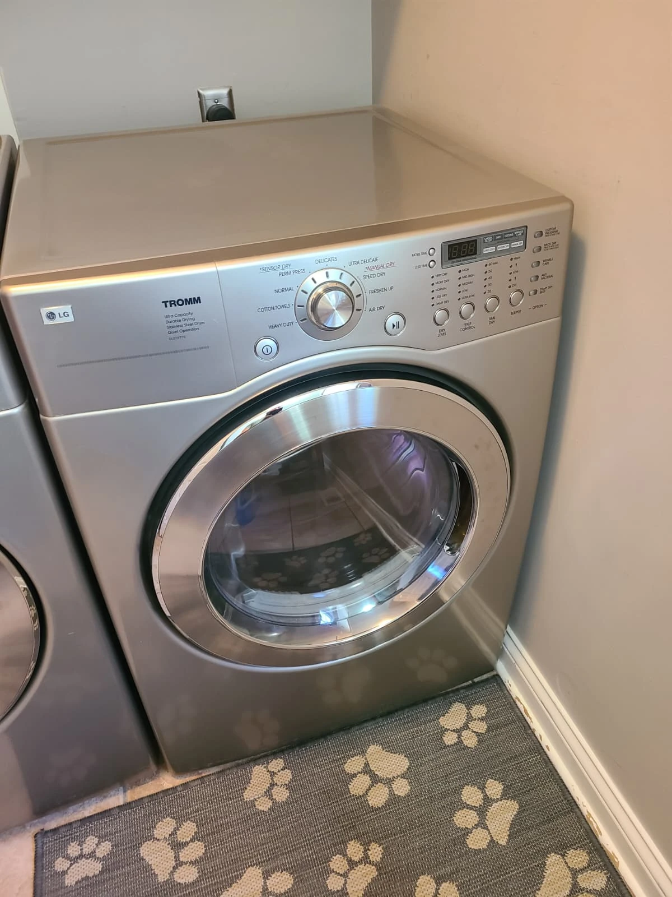
The Service Call: An LG Dryer That Would Not Start
A homeowner in McCordsville, Indiana, contacted Alex Appliance Repair because their LG dryer would not start. The machine was no longer doing its job, and the drum was not turning.
Opening the dryer revealed a mechanical problem: the drive belt had broken. Inspection also found seized drum support rollers and a seized idler pulley. The repair needed to address those binding components as well as the belt.
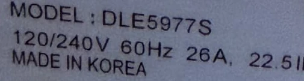
Model Identification: LG TROMM DLE5977S
The original appliance label identifies this electric dryer as LG DLE5977S. The cropped photograph preserves the actual model marking from the service visit.
The full model number is useful when requesting service for a dryer that will not start or whose drum will not spin. It also helps distinguish the dryer from the matching washing machine beside it and supports correct replacement-part selection.
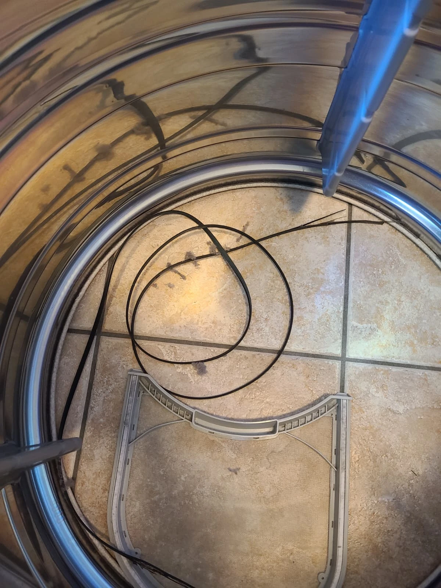
A Broken Belt Was Only Part of the Problem
With the drum removed, the broken belt could be inspected directly. In this case, the technician traced the belt failure to seized rollers and a seized idler pulley, which prevented the drive system from moving freely.
Replacing only the broken belt would have left the diagnosed cause unresolved. The repair therefore covered the belt, the drum supports and the belt tensioner together.
Inspecting the Seized Rollers and Idler Pulley
The service photographs show the original support roller and idler before replacement. Lint and wear debris were visible around the roller area; the technician confirmed that the affected drive components were binding.
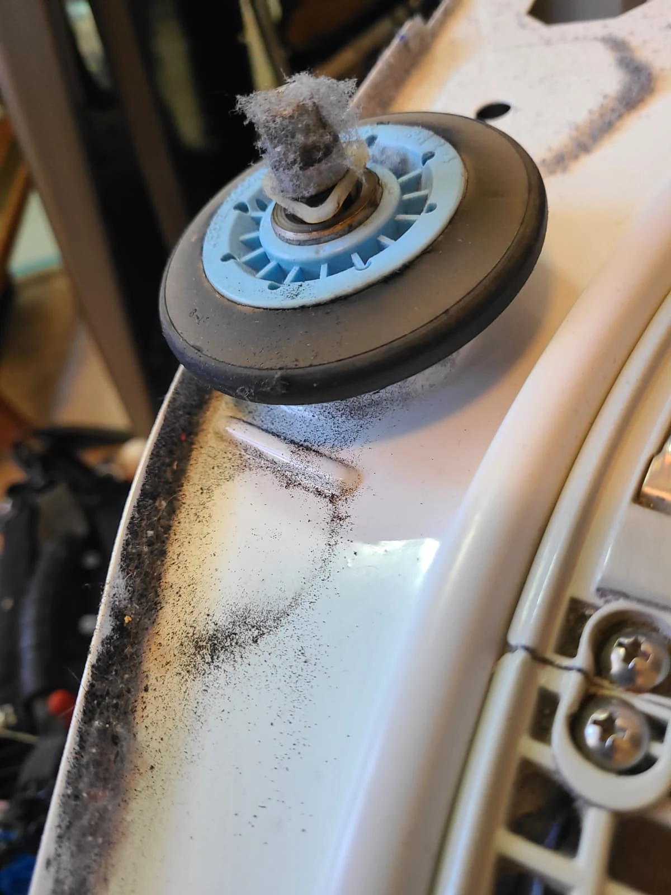
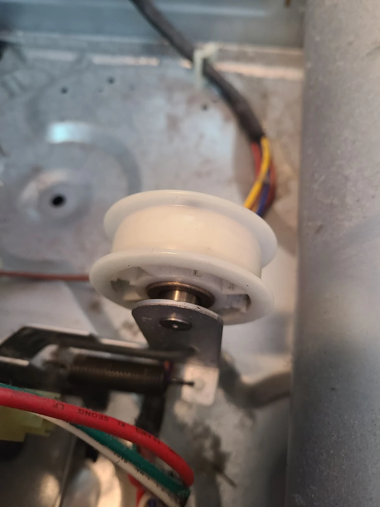
The customer described a dryer that would not turn on. That complaint was the starting point, not proof of an electrical supply or control-board failure. The documented findings and repair in this visit concerned the mechanical drive system.
Replacing All Four Drum Support Rollers
We replaced all four drum rollers: two at the front and two at the rear. With the dryer already disassembled, both sets of supports were accessible.
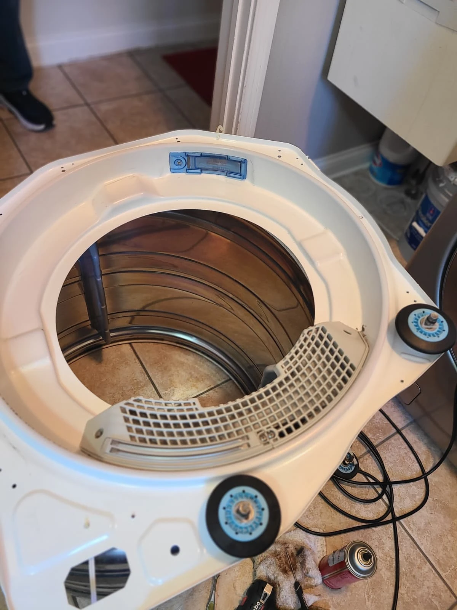
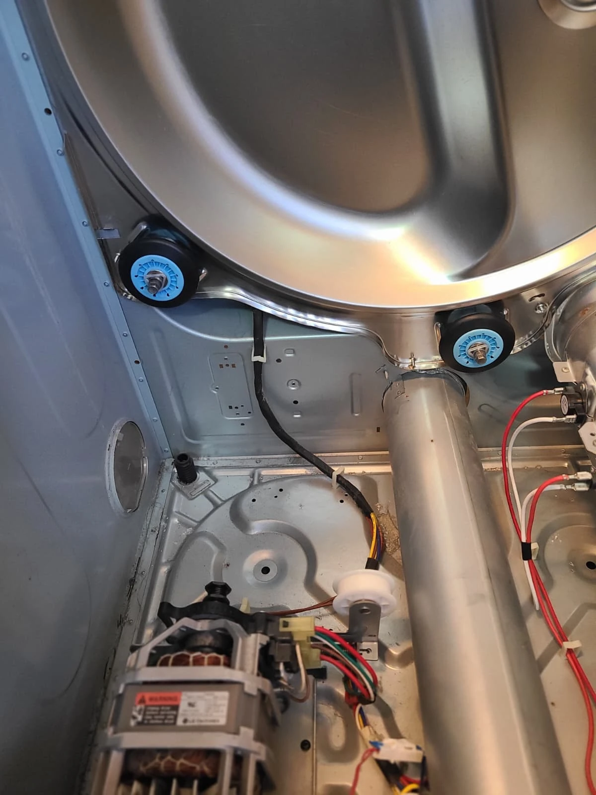
The photographs show the front bulkhead and rear supports after the replacements. Addressing both locations was part of restoring free drum movement before putting the belt and drum back into service.
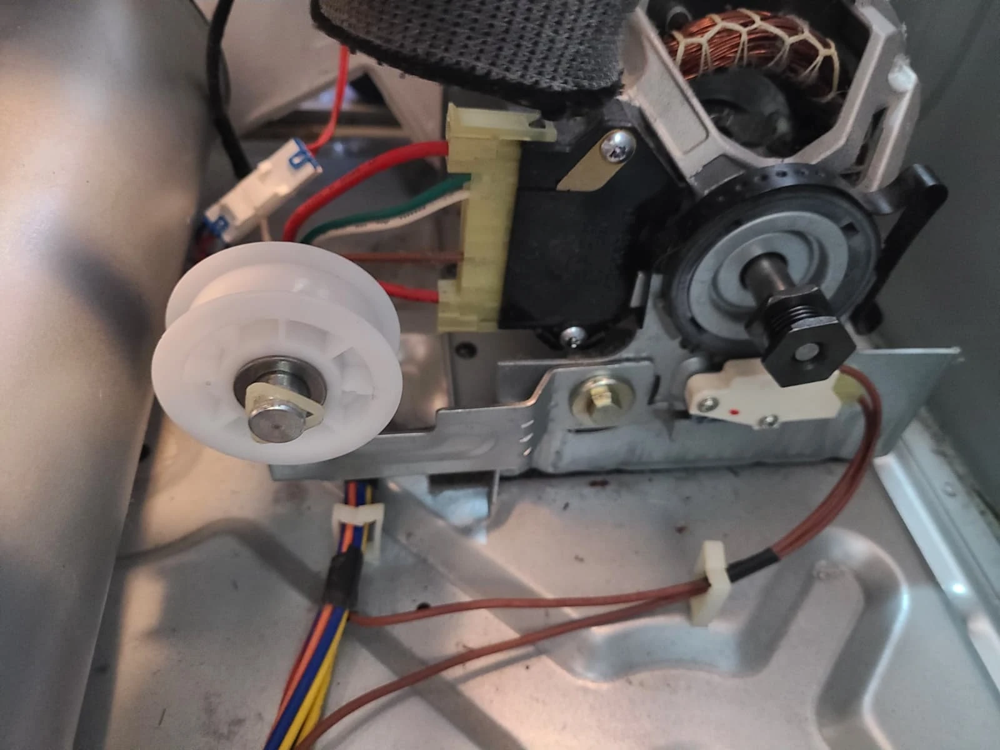
A New Idler Pulley and Drive Belt
The seized idler pulley was replaced with a new assembly. This is the belt-tensioning component beside the motor, shown here after installation.
A replacement drive belt completed the mechanical repair. The work addressed the broken belt and the components identified as the cause of its failure, rather than treating the belt as an isolated problem.
Cleaning the Dryer Interior and Drum
The dryer and drum were cleaned while the machine was open. The removed duct contained lint and loose debris, including coins, as shown in the before-cleaning photographs.
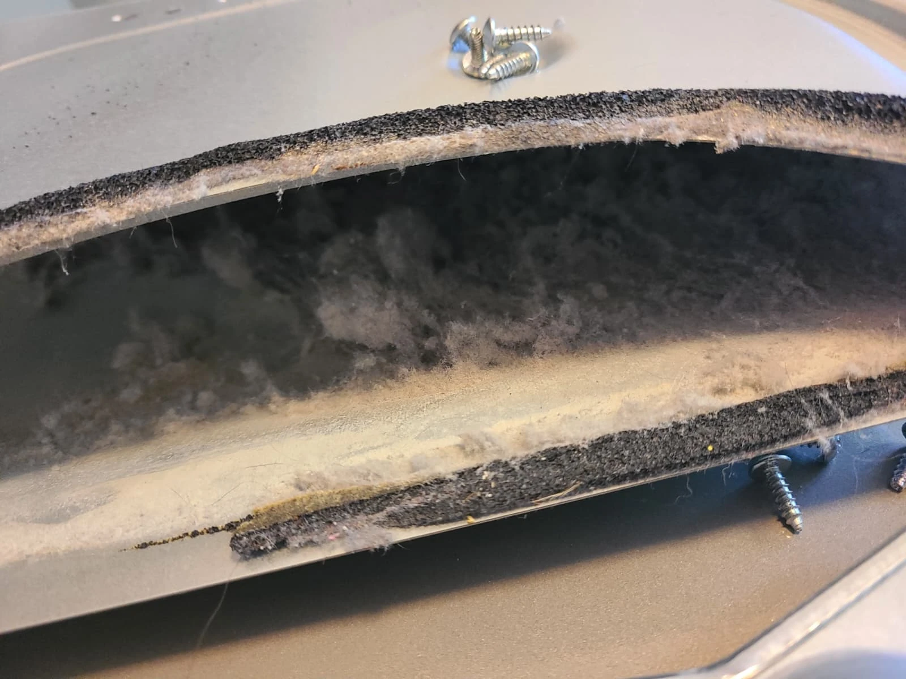
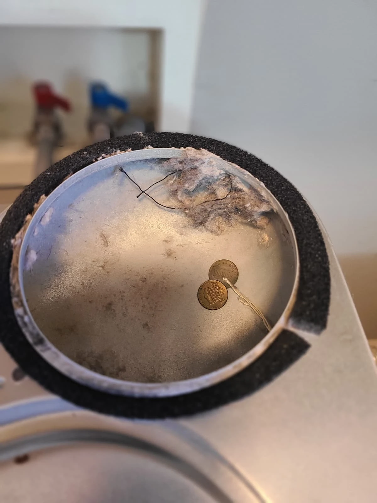
These items were found during cleaning; they were not identified as the cause of the belt failure. The confirmed cause in this repair remained the seized rollers and idler pulley.
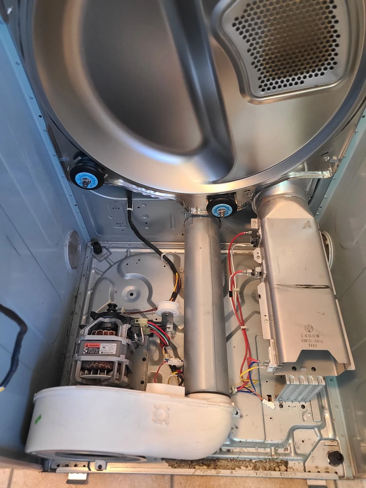
Preparing the Dryer for Reassembly
After cleaning and replacement of the drive components, the dryer was ready for the drum to be reinstalled. The cabinet photograph shows the serviced supports and idler with the drum still out.
This visit combined mechanical repair with interior cleaning. It did not involve replacing the heating element or control board.
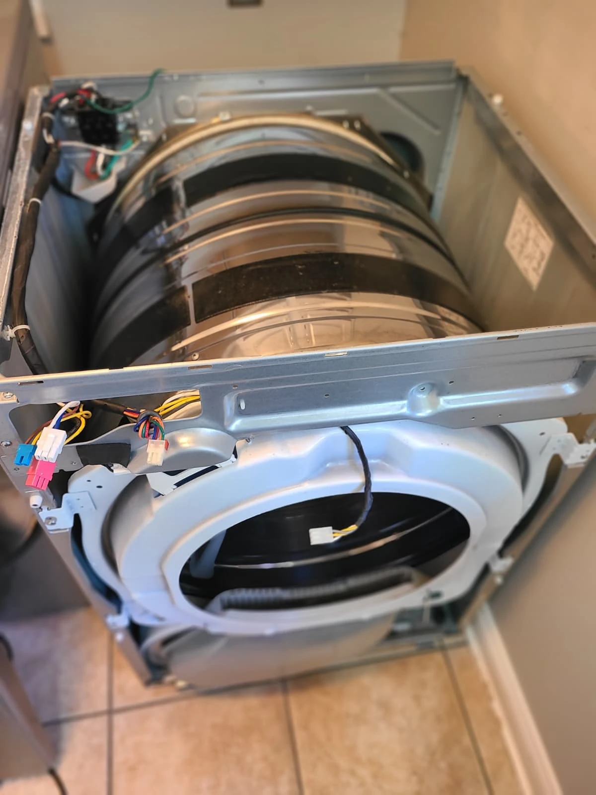
Reassembled, Tested and Working Again
The drum was reinstalled and the dryer fully reassembled. The technician then started and tested the machine: operation was restored and the drum turned again. The photograph shows the reassembly stage before that final check.
The completed service included a new belt, four drum rollers, a new idler pulley, cleaning of the dryer and drum, and a successful post-repair test.
LG Dryer Belt and Roller Repair Questions
Why did this DLE5977S dryer stop working?
Inspection found a broken drive belt together with seized drum support rollers and a seized idler pulley. Those mechanical faults were addressed during the repair.
Why replace the rollers and idler with the belt?
They were diagnosed as the reason the belt failed in this dryer. Installing a belt without resolving that binding would leave the underlying fault in place.
How many rollers were replaced?
All four: two front rollers and two rear rollers. The idler pulley is a separate belt-tensioning component and was also replaced.
Does every LG dryer that will not start need a belt?
No. This article describes one diagnosed repair, not a diagnosis for every no-start symptom. Tell the technician whether the controls light up, whether the machine makes a sound when Start is pressed and whether the drum moves.
Can I request service by model or part name?
Yes. Mention LG DLE5977S and describe the symptom, such as a dryer not starting or a drum not spinning. You can also ask about drive belt, drum roller or idler pulley replacement. The technician should verify the fault and part fit before repair.
LG Dryer Repair in McCordsville, Indiana
For an LG dryer that will not start or whose drum will not turn, contact Alex Appliance Repair for dryer repair in McCordsville. Share the full model number and what happens when you try to start the machine.
Read about our dryer repair services, McCordsville service coverage and other completed appliance repairs. A different recent case involved a Samsung dryer not heating in Carmel.
Alex Appliance Repair is an independent appliance repair service operated by Aksenov LLC. Call (463) 248-8429 to discuss your dryer.
Book dryer repair in McCordsville